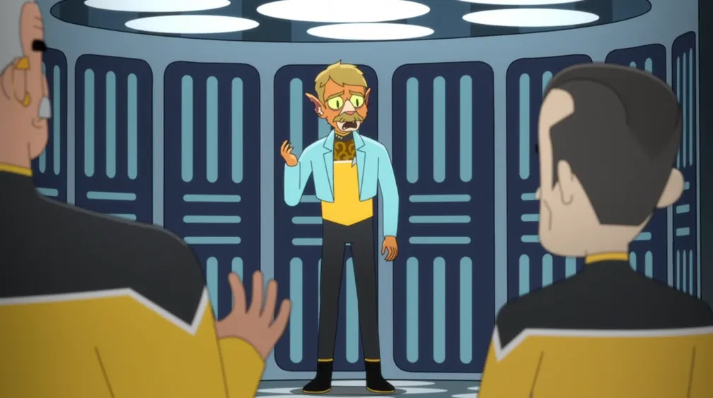
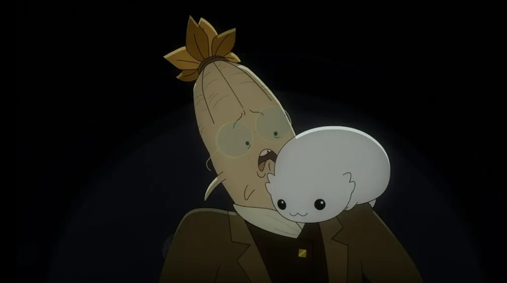
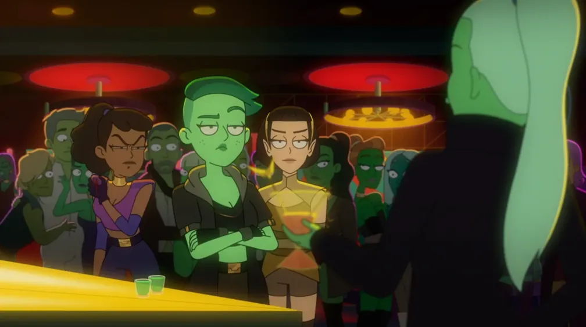
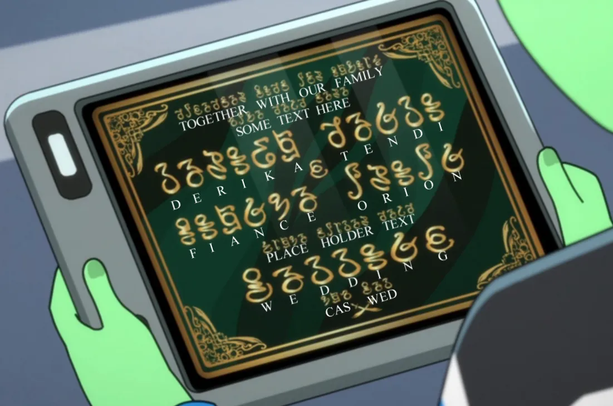
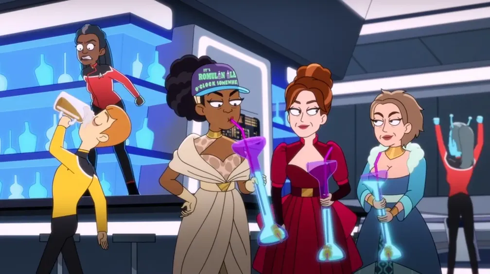
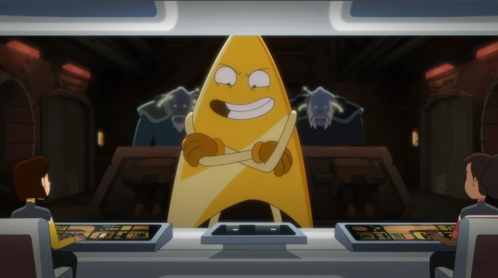
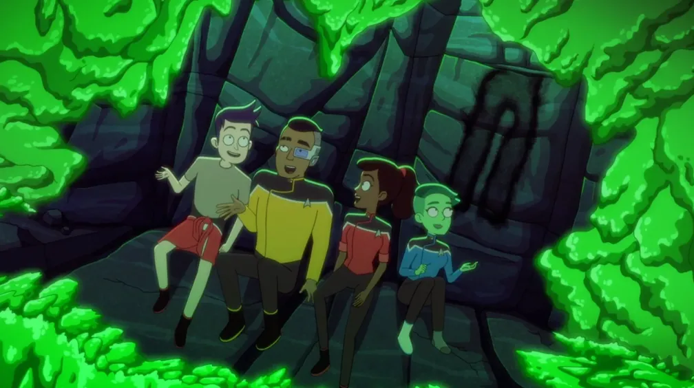
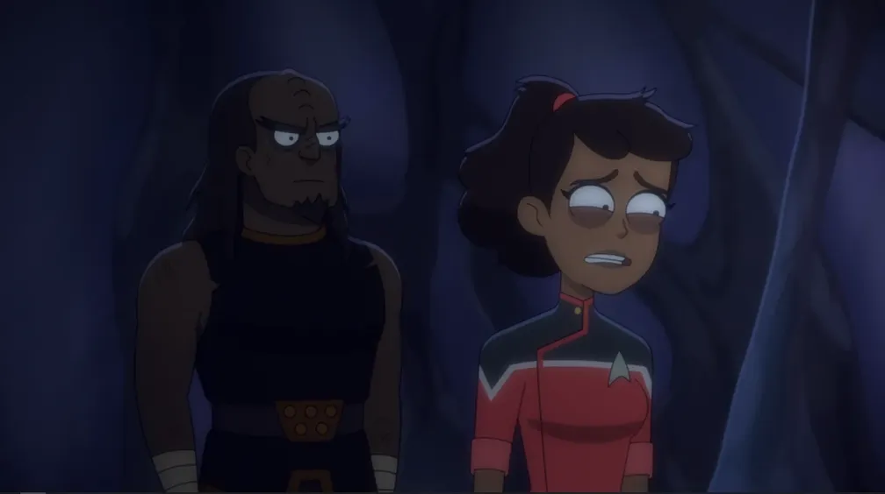
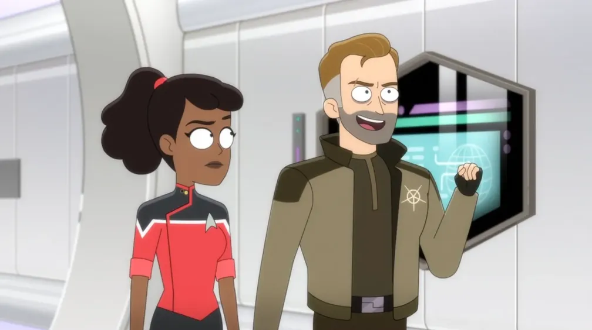

In Season 4, we'll witness an ongoing mystery about a strange ship that seems to be attacking and destroying other ships from many different species. The cool part about this is that each time, we're introduced to a short scene involving the lower decks of another species, instead of just our regular gang. The mysterious attacking ship will be revealed in the last two episodes of the season!
Some of the Cerritos crew escort the preserved USS Voyager to Earth, while the rest deal with a “Tuvix” situation. Boimler is worried that an impending promotion will alienate him and Mariner again.

👇
Klingon Lower Decks: In the episode's coda, lower-deckers on the Klingon ship from LOW 2x09: wej Duj resent Ma'ah's promotion to Captain, and a mysterious ship attacks them. The mystery ship will be seen several more times this season.
🔗️
This episode is named for VOY 2x24: Tuvix, and it is replete with references to that episode and Voyager in general.
🔗️
Mariner tells Boimler that this mission is nothing compared to “that Pike thing we aren't supposed to talk about”, referencing the Strange New Worlds crossover episode, SNW 2x07: Those Old Scientists.
⬆
Level-Up: Spoiler » Boimler, Mariner, and Tendi promoted to Lieutenant J.G.
🔗︎
Minor references:
The opening teaser gives us the reveal of the USS Voyager NCC‑74656, and a variation on the theme music from the eponymous show, Star Trek: Voyager can be heard.
After the credits, we see Voyager's engineering section, then the Borg-ified cargo bay with a mannequin of Seven of Nine, then the mess hall with a mannequin of Neelix, and finally the bridge with mannequins of Janeway and Harry Kim.
Rutherford admires Voyager's bio-neural circuitry, and talks about the “Neelix cheese”, which is a reference to VOY 1x16: Learning Curve.
Tendi and T'Lyn work on things in Voyager's sickbay, with a mannequin of Tuvok. Later, on the bridge, Boimler nearly knocks over a mannequin of Tom Paris.
Boimler is attacked by a Tak-Takian macrovirus, from the episode VOY 3x12: Macrocosm.
The macroviruses knock over two orange salamander-like robotic exhibits, which are references to VOY 2x15: Threshold.
The malfunctioning computer creates holograms of Chaotica from (most-notably) VOY 5x12: Bridge of Chaotica!, the Clown from VOY 2x23: The Thaw, and Michael Sullivan, originally from VOY 6x11: Fair Haven. Mariner correctly points out that the Clown wasn't even a holodeck program.
One of the macroviruses hilariously seems to have been impaled by Harry Kim's clarinet.
Thoughts: Now this is a season opener, and that macrovirus floating around with Harry's clarinet stuck in it made me laugh out loud.
Rutherford tries to get promoted. Boimler tries to acclimate to new quarters. Mariner tries to get demoted while she and Ransom run from a bone-drinking Moopsy at a nearby “menage”.

👇
Romulan Lower Decks: In the opener, lower-deckers on a Romulan ship discuss plans when the mystery ship attacks.
Freeman tries to repair Vexilon, a benevolent computer which maintains the environment on a ring megastructure. Boimler struggles with leading Ensigns on an away mission. Mariner, Tendi, and Rutherford get hazed.
The Wadi chula game “with the pastel triangles and the little girl doing hopscotch” from DS9 1x10: Move Along Home.
The Betazoid gift box gets zapped by a Kataan probe and lives out an “entire simulated life”, just like what happened to Captain Picard in TNG 5x25: The Inner Light.
Tendi brings Mariner and T'Lyn to Orion to locate her kidnapped sister, and must face the truth of her upbringing. Boimler and Rutherford adapt to being roommates.

👇
Orion Lower Decks: In the opener, lower-deckers on an Orion ship are busy scheming when the mystery ship attacks.
🔠️
They Speak English: The Orion language appears to just be English, but with different glyphs.
► S H O W
P H O T O S ►
◄ H I D E
P H O T O S ◄
❰
❱

🔗︎
Minor references:
Boimler and Rutherford both dress as Mark Twain in the holodeck. The crew of the Enterprise‑D famously once interacted with the real Mark Twain in TNG 5x26 & 6x01: Time's Arrow.
Mariner says the Orion pheromones were made up to explain why a captain was taken out by Orion showgirls. She is referencing ENT 4x17: Bound.
Freeman argues with a member of the Chalnoth race. This species was only ever seen once before in TNG 3x18: Allegiance.
The abandoned ship that Tendi brings Mariner and T'Lyn to appears to be a Raven-type exploration vessel like the one Seven of Nine's family used, as seen in VOY 4x06: The Raven.
The Cerritos hosts three Betazoid diplomats and the crew starts acting wonky.

🔗︎
Minor references:
The Betazoid diplomats are on their way to Risa from Angel I. Angel I is the female-dominated planet from TNG 1x14: Angel One, and Risa is a vacation pleasure-planet first seen in TNG 3x19: Captain's Holiday.
Boimler asks if he's going to learn Tsunkatse, which is a fighting spectator sport from VOY 6x15: Tsunkatse.
T'Lyn suspects the Betazoids may have Zanthi Fever, which was first mentioned in DS9 3x10: Fascination when Lwaxana Troi's affliction caused the population on Deep Space Nine to act strangely and amorously.
Later, T'Lyn suspects she may have Bendii Syndrome, which was first mentioned in TNG 3x23: Sarek, when Sarek's affliction was causing the crew of the Enterprise‑D to lash out emotionally. Mariner later points out that Sarek, Spock's dad, suffered from the syndrome, referencing that episode.
Freeman and an admiral negotiate Ferenginar's admittance to the Federation. Mariner looks up an old friend who makes her face uncomfortable truths. Tendi and Rutherford get awkward when they must pose as a couple. Boimler watches TV for hours.
Ferengi Lower Decks: In the opener, lower-deckers on a Ferengi ship complain about throwing out valuable items when the mystery ship attacks.
🔗
Mariner's Ferengi friend, Quimp, was last seen in LOW 1x02: Envoys.
🔗︎
Minor references:
In the opener, while clearing out goods in the cargo hold, they find an “updated, portable” Genesis device, first seen in Star Trek II: The Wrath of Khan.
Rutherford must contend with the return of his creation, Badgey. Boimler and Tendi deal with AGIMUS and Peanut Hamper.

‼️
Very Important Episode This episode brings back several beloved characters and goes on to expand the story of the mysterious ship we've been seeing this season.
Badgey! Badgey was left behind in Rutherford's old implant after the battle in LOW 1x10: No Small Parts. We pick up here right where we left off in LOW 3x10: The Stars at Night where the old implant is being salvaged along with other debris from the fight.
Bynar Lower Decks: After the opening credits, we get a brief look at life on the lower decks of a Bynar ship, though humorously their language is not subtitled, so we don't really know what they're talking about when the mystery ship attacks. Oddly, there are three Bynar lower-deckers, when their species always operate in pairs. This is mentioned later, in the season finale.
The gang recount stories of being stuck in caves while they are stuck in a cave.

⛏️
This episode makes light of the use of caves as sets in Star Trek stories, often reusing the same set to represent different caves in different stories. In this episode, the caves seen in each of our heroes' stories is the same layout with only minor changes between them.
While stuck on a planet with other races that have been kidnapped by a mysterious ship, Mariner opens up about a past trauma. Freeman seeks out Nick Locarno, who turns out to be the one behind the kidnappings.

❗
Important Episode It's time to find out more about that mysterious ship we've been seeing all season!
The Klingon that Mariner does battle with is Ma'ah from LOW 2x09: wej Duj.
🔗
Mariner talks about her Academy role-model, Sito Jaxa, and how she was killed by Cardassians. Sito Jaxa attended the Academy alongside Nick Locarno in the episode TNG 5x19: The First Duty, and the story of how she died is told in TNG 7x15: Lower Decks.
🔗︎
Minor references:
Boimler mumbles in his sleep, “Teach me how to tap dance, Beverly Crusher”, referencing TNG 4x11: Data's Day.
Mariner does battle with a rogue Nick Locarno. Tendi undergoes ritual combat on her homeworld in order to gain an Orion battleship to aid in the Cerritos's unsanctioned mission to rescue Mariner.

‼️
Very Important Episode You'll want to watch this one to keep apprised of important plot developments.
💁♂️
Robert Duncan McNeill continues his reprisal of his one-time role as Nick Locarno from TNG 5x19: The First Duty. McNeill is better known for his primary role as Tom Paris in Star Trek: Voyager, hence the in-joke from Rutherford saying “He looks like Tom Paris!”
💁♂️
Wil Wheaton reprises his role as Wesley Crusher from Star Trek: The Next Generation, specifically around his time in the academy as seen in TNG 5x19: The First Duty.
Mariner says “Can you have three Bynars?”, pointing out the strange inconsistency since it is known that Bynars always work in pairs. This was established in the Bynars' first appearance in TNG 1x15: 11001001.
🔗︎
Minor references:
Rutherford and Livik dress as Mark Twain on the holodeck to resolve their disagreement. This goes back to LOW 4x04: Something Borrowed, Something Green where Rutherford and Boimler did the same.
The entire concept of playing a game of cat-and-mouse in an ion cloud with a Genesis Device is a direct reference to Star Trek II: The Wrath of Khan.
Boimler says that he's “never actually seen someone use the captain's yacht”. This is sort of poking fun at the concept for an auxiliary vessel mounted on the ventral side of the mother ship's saucer existing on the Enterprise‑D (called the captain's yacht) and on the Voyager (called the aeroshuttle), but neither of them were ever seen in use. The only time a captain's yacht was used in live-action was from the Enterprise‑E in Star Trek: Insurrection.
This is an independent fan site and is not affiliated with or endorsed by Paramount Global. Star Trek and all related marks, logos, and characters are the property of Paramount Global. Reset Cookie Preferences
"Franchise Episode" tells you the order in which episodes from ANY/ALL Star Trek television shows aired or streamed for the first time. This number excludes movies, TOS's "The Cage", and the "Very Short Treks" web shorts. click or scroll to close
1st, 2nd, and 3rd place awards reflect the best, but also the most representative episodes of the series. So, even excellent one-off or “special” episodes often aren't considered. click or scroll to close
Ex Astris Scientia is an independent website devoted to the Star Trek universe, and includes reviews of episodes on a scale of 0 to 10. Visit the site at ex‑astris‑scientia.org. click or scroll to close
IMDb ratings re-distributed on a 2-9 scale. Scores of 0, 1, and 10 are reserved for outliers (determined by a z-score less than -2.5 or greater than 2.5). User ratings on IMDb for the episodes in Star Trek: Lower Decks range from 6.9 to 8.9. IMDb ratings were retrieved on January 26, 2026. click or scroll to close


 @c6reviews.
@c6reviews.